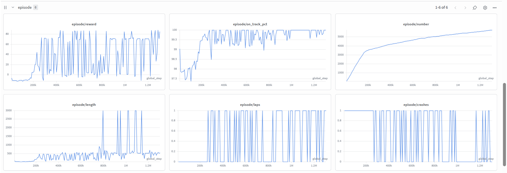
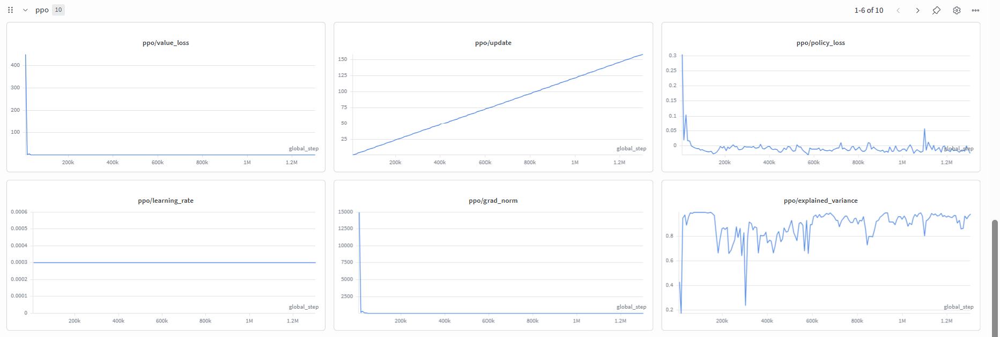

🏎️ Teaching a Car to Race from Scratch with Curriculum RL and OpenEnv
TL;DR
A PPO agent learns to drive on 10 tracks of increasing difficulty — starting from random noise, ending with hairpin turns and chicane layouts — using only a 64×64 egocentric image and 9 sensor readings. No human demonstrations, no map, no privileged information. Just reward.
The full environment is open-source and OpenEnv-compliant. Serve it as an HTTP API in one line:
uvicorn env.server.app:app --host 0.0.0.0 --port 8000
The final trained policy — zero crashes, at least one completed lap on every track, evaluated deterministically.
The Problem with Hard Tasks from Day One
Reinforcement learning from scratch is brutally hard when the task is too difficult from the start.
Imagine dropping an untrained car-racing agent directly onto a tight hairpin track. It crashes immediately. The reward is −15 and the episode ends. The agent tries again, crashes again. After thousands of identical failures, the gradient says "don't move" — and it stops trying.
The classic solution is curriculum learning: start with the easiest version of the task and only advance when the agent has genuinely mastered it. Build skills one layer at a time.
But implementing curriculum learning robustly — with automatic gating, forgetting prevention, and regression recovery — is where the interesting engineering lives. This post walks through every design decision that made a real curriculum work, from first principles.
The Environment: 10 Tracks, 3 Groups
I built the simulation in Pygame with no ML dependencies. Each track is a
TrackDef — a procedurally defined centreline of waypoints rendered into a dark-grey
tarmac surface with white boundary lines and a checkered start/finish line.
| # | Track | Road Width | Max Speed | Key Challenge |
|---|---|---|---|---|
| 1 | Wide Oval | 115 px | 3.0 | Nothing — just drive |
| 2 | Standard Oval | 85 px | 3.5 | Slightly narrower |
| 3 | Narrow Oval | 58 px | 3.5 | Precision required |
| 4 | Superspeedway | 85 px | 4.5 | High speed, elongated |
| 5 | Rounded Rectangle | 90 px | 3.5 | First real corners |
| 6 | Stadium Oval | 80 px | 4.0 | Tight end-caps |
| 7 | Tight Rectangle | 65 px | 3.5 | Sharp 90° corners |
| 8 | Small Oval | 60 px | 3.2 | Small radius |
| 9 | Hairpin Track | 75 px | 3.5 | Hairpin reversal |
| 10 | Chicane Track | 70 px | 3.5 | S-bend chicane |
Track difficulty is computed as:
complexity = (base_width / road_width) × (max_speed / base_speed)The environment is fully compliant with the OpenEnv standard. Any client can connect over HTTP:
from openenv import connect
env = connect("http://localhost:8000")
obs = env.reset()
while not obs.done:
action = my_agent(obs) # DriveAction(accel=..., steer=...)
obs = env.step(action)Or use the Gymnasium wrapper directly for local training:
from env.gym_env import RaceGymEnv
env = RaceGymEnv(track_level=5)
obs, info = env.reset()
obs, reward, terminated, truncated, info = env.step(env.action_space.sample())What Does the Agent See?
The agent receives two inputs every step, fused by the encoder before the actor and critic heads.
1. Egocentric Headlight Image — (3, 64, 64)
The critical design decision: the image is always rotated so the car faces upward.
game state (x, y, angle)
→ draw track + 60°-wide headlight cone to offscreen canvas
→ crop 120×120 px centred on car (grass-padded at edges)
→ rotate so heading = UP
→ re-crop centre 120×120 after rotation
→ scale to 64×64This makes the visual input invariant to absolute position and heading. The CNN never learns "at pixel (450, 515), the track curves left." It only needs to learn "a white boundary approaching from the right half of the view means steer left." The effective training distribution is ~4× richer without any extra data — the same track looks different from every heading.
2. Scalar Sensors — (9,)
[
angular_velocity, # gyroscope — how fast am I turning?
speed, # speedometer — speed / max_speed
ray_left, # wall distance at −90° (normalised 0→1)
ray_front_left, # wall distance at −45°
ray_front, # wall distance at 0° (straight ahead)
ray_front_right, # wall distance at +45°
ray_right, # wall distance at +90°
wp_sin, # sin(bearing to next waypoint − current heading)
wp_cos, # cos(bearing to next waypoint − current heading)
]Two design choices here that made a real difference:
Raycasts instead of a binary on_track flag. The original environment
had a single boolean: are you on track? The agent only learned it had crashed after crashing.
Replacing this with 5 raycasts means the agent can see a wall approaching at 80 px and start
steering away — the difference between reactive and anticipatory driving.
Waypoint bearing as a relative GPS compass. Early experiments included raw waypoint
coordinates (x, y). These don't transfer across tracks — "waypoint at (700, 300) means go right"
is meaningless on Track 9. The (wp_sin, wp_cos) encoding is track-agnostic: it only says
where the track goes relative to where I'm pointing. wp_cos ≈ 1 means the track
is straight ahead. wp_sin < 0 means it bends left. This encoding is what enables the
same policy to generalise across all 10 tracks.
Reward Design: Getting the Scale Right
Early experiments used large reward magnitudes — ±300 for crashes, +200 for lap completion. The result: value function targets in the hundreds caused value loss to completely dominate the gradient. The policy barely updated because all gradient budget was spent fitting the value function.
| Event | Reward | Why |
|---|---|---|
| Every step | −0.005 | Efficiency pressure — don't dawdle |
| Forward speed | speed_norm × 0.10 | Must move to earn reward |
| Reverse speed | speed_norm × 0.10 (negative) | Penalise going backwards |
| Waypoint advance | +0.25 per waypoint | Dense directional signal |
| Waypoint regress | −0.25 per waypoint | Wrong-way penalty |
| Lap completed | +10.0 | Major completion bonus |
| Crash / off-track | −15.0, done | Hard deterrent |
| Out of bounds | −15.0, done | Stay on screen |
The waypoint progress reward was the single most impactful addition. Without it, the only lap signal is the +10 bonus at the finish line — extremely sparse for a 3000-step episode where most early episodes never complete a lap. With +0.25 per waypoint, the agent gets a gradient pointing toward the finish line on every step of every episode, even episodes it never completes.
Lap Detection: No Shortcuts
A naive "did the car cross the start line" check is trivially exploited. The final implementation uses a two-phase arm/trigger gate:
- Arm phase: Car must travel >50 px past the start line in the forward direction
- Trigger phase: Car must cross back through the start line with
speed > 0.3and having covered ≥80% of the track's optimal lap distance
The 80% distance check makes shortcutting the infield physically impossible — the car genuinely has to drive the full track.
Architecture: ImpalaCNN + Shared Encoder
image (3, 64, 64) ──► ImpalaCNN
Block 1: Conv(3→16) + MaxPool + ResBlock × 2
Block 2: Conv(16→32) + MaxPool + ResBlock × 2
Block 3: Conv(32→32) + MaxPool + ResBlock × 2
Flatten → Linear → ReLU ───────────────► 256-d
│
scalars (9,) ──────► MLP: Linear(9→32) → ReLU → Linear(32→32) ► 32-d
│
[Concat] 288-d
(RaceEncoder)
│
┌──────────────────────────┤
Actor head Critic head
Linear(288→2) Linear(288→1)
+ log_std param scalar V(s)
IndependentNormal
→ [accel, steer]Why ImpalaCNN over Nature CNN?
Nature CNN (3 conv layers, no skip connections) is the standard Atari baseline. I tried it first — the agent stalled on Track 3. The culprit: without skip connections, gradients vanish before reaching the early conv layers. The first-layer filters stop learning after a few hundred thousand steps.
ImpalaCNN adds residual connections in each block: output = x + conv_block(x).
Gradients flow directly from the actor/critic heads back to the earliest filters. In practice, this
converged in ~3–5× fewer environment steps for the same wall-clock inference cost.
Initialisation Details
- Orthogonal init (gain √2 for encoder layers) — prevents gradient vanishing at init
- Actor head gain 0.01 — very small initial action means, so the car doesn't immediately drive full-speed into a wall on step 1
- Actor bias[0] = 0.3 — gentle initial forward acceleration; without this, the car often sits still during early exploration and learns nothing
- Log-std = −1.0 initially (std ≈ 0.37) — moderate exploration, not so random the agent can't get off the start line
Training: Three-Layer Curriculum
uv run python -u training/train_torchrl.py \
--num-envs 16 \ # parallel workers
--rollout-steps 8192 \ # frames before each PPO update
--batch-size 1024 \ # PPO minibatch size
--ppo-epochs 10 \ # passes per rollout
--compile # torch.compile (~30% throughput boost)The curriculum has three interlocking mechanisms. All three are necessary — any one alone is insufficient.
Layer 1 — Greedy Evaluation Gating
Every 25k steps, all 10 tracks are evaluated with a deterministic (greedy) policy — no exploration noise. A track passes if the agent completes ≥1 lap with 0 crashes. The curriculum frontier advances only when every track up to the current one passes. If all 10 pass simultaneously, training stops.
Layer 2 — Anti-Forgetting Replay
70% of episodes → current frontier track
30% of episodes → round-robin through all mastered tracksWithout replay, the agent reliably regresses on Track 1 by the time it reaches Track 7. Catastrophic forgetting is fast — within 200k steps, early skills dissolve if never practised.
Round-robin (rather than uniform random) ensures every mastered track gets equal coverage. To make this concrete — imagine the agent is on Track 7. The schedule looks like:
Episode 1: frontier (Track 7)
Episode 2: frontier (Track 7)
Episode 3: replay (Track 1) ← round-robin: 1, 2, 3, 4, 5, 6, 1, 2, ...
Episode 4: frontier (Track 7)
Episode 5: frontier (Track 7)
Episode 6: replay (Track 2)
...Layer 3 — Priority Replay
When greedy eval discovers a regression (a previously-passing track now failing), that track is written to a shared memory array. All 16 worker processes check this array and dedicate an additional 30% of episodes to the failing track — on top of normal replay.
Without this, regressions persist for 5–10 eval intervals. With priority replay, they're typically recovered within 1–2 intervals. The curriculum stays monotonically advancing rather than oscillating.
W&B Training Curves
The curriculum level stepping is clearly visible in the episode reward chart — each plateau is the agent consolidating skills on a new frontier track, each jump is advancement.

Episode metrics — reward, laps, crashes across the full curriculum

PPO internals — value loss, policy loss, entropy, explained variance
The explained variance chart is the clearest health signal: it rises to >0.85 within 200k steps per frontier, showing the value function accurately models the curriculum. If it drops below 0.5, the reward scale is wrong or the network capacity is insufficient.
Results
Deterministic (greedy) evaluation on all 10 tracks, final checkpoint:
| Track | Laps | Crashes | |
|---|---|---|---|
| 1 — Wide Oval | 1 | 0 | ✅ |
| 2 — Standard Oval | 1 | 0 | ✅ |
| 3 — Narrow Oval | 1 | 0 | ✅ |
| 4 — Superspeedway | 1 | 0 | ✅ |
| 5 — Rounded Rectangle | 1 | 0 | ✅ |
| 6 — Stadium Oval | 1 | 0 | ✅ |
| 7 — Tight Rectangle | 1 | 0 | ✅ |
| 8 — Small Oval | 1 | 0 | ✅ |
| 9 — Hairpin Track | 1 | 0 | ✅ |
| 10 — Chicane Track | 1 | 0 | ✅ |
Final Score
10 / 10 PASS — ~1.3M environment steps — ~1–3 hours on a single GPU with 16 workers.
FAQ
1. Why not train on all 10 tracks simultaneously from the start?
I tried this. The agent converges on Track 1 (wide oval) and never escapes. The gradient signal from Track 10 (chicane) is pure noise when the agent has zero driving skill — it drowns the useful signal from Track 1 rather than complementing it. Curriculum pacing ensures difficulty increases only once the agent is ready.
2. Does the waypoint GPS make the agent cheat the reward?
The GPS (wp_sin, wp_cos) points toward the track centreline ahead.
It doesn't tell the agent where the start line is or when a lap is complete — that's detected
separately by the gate arm/trigger mechanism. The GPS just says "the road bends slightly left"
— the same information a real car's navigation would provide.
3. Why does the egocentric image face upward rather than forward?
"Forward" in the image is up — the image is rotated so the car always appears to drive toward the top of the frame. This makes the visual representation of "I'm about to hit a wall on the left" identical regardless of whether you're on the left straight, right straight, or any curve. A CNN trained on this generalises to every track orientation automatically.
4. Can this agent drive on a track it was never trained on?
Partially. The features it has learned — "slow down when the wall is close," "follow the centreline bearing," "don't reverse" — are genuinely general. On a new oval it would likely succeed. On a track with a layout completely unlike any of the 10 (e.g. a figure-8 with an intersection), it would probably fail. A larger, more diverse curriculum would help.
5. Why TorchRL over stable-baselines3 or CleanRL?
TorchRL's ParallelEnv and tensordict integration made scaling to 16
workers and batching rollouts from a Gymnasium Dict observation space straightforward.
CleanRL is excellent for single-environment baselines — I used it in early prototyping — but TorchRL
scales better for this curriculum setup.
Try It Yourself
git clone https://github.com/NirmalPratheep/curriculum-car-racer
cd curriculum-car-racer
uv sync
# Watch the trained agent on all 10 tracks (saves MP4s)
uv run python inference/inference.py \
--checkpoint checkpoints/ppo_torchrl_final.pt
# Play interactively yourself (arrow keys)
uv run python main.py # Track 1 — Wide Oval
uv run python main.py 9 # Track 9 — Hairpin
# Train from scratch (~1–3 hours on GPU)
bash training/cmd
# Serve as an OpenEnv HTTP API
uvicorn env.server.app:app --host 0.0.0.0 --port 8000